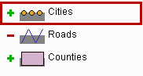

Figure 1. An example map legend.
For each map layer there is an item in the legend that consists of the following elements:
Through the legend it is possible to do following interactive operations:
| switch on/off drawing of a layer | click on the "minus" or "plus" icon |
| change the active layer | click on the legend item of the layer that should become active (but not on the "plus" icon) |
| change the order of drawing of the layers | drag the legend items to the desired positions. Note that layers shown at the bottom of the legend are drawn first, and the layers at the top are drawn last |
| change the visual properties of a layer | double-click on the corresponding legend item. A dialog for editing of the visual properties will appear on the screen. |